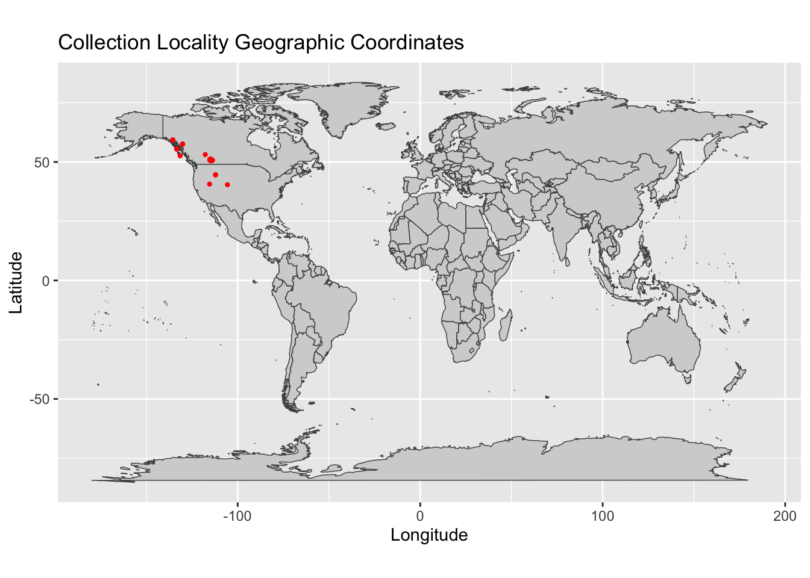

13 Conservation genetics
13.1 subtopics
13.2 Practice
13.2.0.1 Purpose
Genetic diversity refers to variation in the base pairs of DNA. This genetic diveristy is resposible for the diversity we observe within species (e.g., thermal tolerance, body size). This diversity is essential if species are going to survive environmental change and we can sequence DNA from individuals within a species to obtain measures of genetic diversity.The Convention on Biological Diversity (CBD) included genetic diversity among its 2010 biodiversity targets.
The IUCN red list is an international effort to list species as either least concern (LC), near threatened (NT), vulnerable (VU), endangered (EN), or critically endangered (CR) in order to adequately protect species that are in need.
This exercise will use data from an open-source genetic database to answer the question: Is the IUCN red list designed to help protect species with low genetic diveristy that would put them at a higher risk of extinction?
13.2.0.1.1 Learning objectives:
- Explain why genetic diversity is an important concept in conservation biology.
- Provide examples as to why open-source databases are valuable tools in conservation biology.
- Conduct data analysis using the R statistical computing language.
- Interpret plots in order to answer a research question.
13.2.0.1.2 Packages needed for this module
- ggplot2
- tools
- ade
- adegenet
- ape
- pegas
- stringr
- tidyr
Load packages.
library(ggplot2)
library(tools)
library(adegenet)
library(pegas)
library(stringr)
library(tidyr)13.2.0.2 Download genetic data
Choose a taxonomic group to study for the above question. Navigate to the PhylogatR website to download data.
13.2.0.3 Download IUCN data
Navigate to the IUCN red list website. You will need to create and account to download data.
- Click on
Advanced - On the right tool bar, click on
Taxonomy - Click the appropriate check boxes/arrows to narrow the selection down to your group.
- Download the
Search Results
Your download will be a zip file called redlist_species_data_ followed by a long list of numbers and letters. If you are using a Mac the zip file will unzip when you double click on it. If you are using Windows, you must extract the files first.
13.2.0.4 Import IUCN data
This imports the csv file and creates and R object called assessments.
assessments <- read.csv("assessments.csv")In the upper right block of RStudio you will see an Environment tab. Click on it if it is not already chosen. Under Global Environment you will see the objects from your R session. You can click on the assessments object to view it.
You can use R to list the column headers.
names(assessments)## [1] "assessmentId" "internalTaxonId"
## [3] "scientificName" "redlistCategory"
## [5] "redlistCriteria" "yearPublished"
## [7] "assessmentDate" "criteriaVersion"
## [9] "language" "rationale"
## [11] "habitat" "threats"
## [13] "population" "populationTrend"
## [15] "range" "useTrade"
## [17] "systems" "conservationActions"
## [19] "realm" "yearLastSeen"
## [21] "possiblyExtinct" "possiblyExtinctInTheWild"
## [23] "scopes"We are the most interested in columns 3 and 4, so lets clean it up a little so it is easier to use later.
assessments <- assessments[,3:4]Create a plot to look at the distribution of red listings in this group.
r <- ggplot(assessments, aes(x=redlistCategory, fill=redlistCategory)) + geom_bar() + scale_fill_brewer(palette = "Paired") + theme(axis.title.x=element_blank(), legend.position = "none") + theme(axis.text.x = element_text(angle = 25))
r
We can also view these in a table.
table(assessments$redlistCategory)##
## Critically Endangered Data Deficient
## 682 2229
## Endangered Extinct
## 586 299
## Extinct in the Wild Least Concern
## 14 3291
## Lower Risk/conservation dependent Lower Risk/least concern
## 4 17
## Lower Risk/near threatened Near Threatened
## 118 575
## Vulnerable
## 1032What do all the categories mean? Hint: Your dataset might not contain all these categories. Some of them are older categories that need to be updated in the database.
Take a look at each category for your group. What is the most frequent category? Compare with your classmates.
13.2.0.5 Import and summarize sequence data
To get the information we need from all the sequence alignments from our PhylogatR download, we'll first create a list of all the sequence alignments and put them in an object called myfiles.
myfiles <- list.files(pattern = ".afa", full.names=TRUE, recursive = TRUE)Here we loop through the list stored in myfiles to calculate genetic diversity for each sequence alignment. All data will be written to a csv file called phylogatr-data.csv and stored in the current working directory. This step will take a few minutes to run, and will take longer if you have a lot of species.
for (f in myfiles) {
#get species and gene name
sp <- basename(f)
sp <- file_path_sans_ext(sp)
#read in fasta file
seq <- fasta2DNAbin(f, quiet=TRUE)
#get number of sequences
n <- nrow(seq)
#calculate nucleotide diversity
pi <- nuc.div(seq)
#write data to file
write.table(data.frame(sp, pi, n), file="phylogatr-data.csv", quote=FALSE, row.names=FALSE, col.names=!file.exists("phylogatr-data.csv"), append=TRUE, sep=",")
}13.2.0.6 Merge IUCN and genetic data results
First, import the output from the previous step, then look at the column headers.
genetics <- read.csv("phylogatr-data.csv")
names(genetics)## [1] "sp" "pi" "n"sp = species
pi = nuceotide diversity
n = the number of sequences
Now, we can merge the data from both databases. We have two objects in our R environment. 1) assessments has the IUCN data and 2) genetics has the calculated genetic diversity.
We'll need to reformat the species names from PhylogatR so they can match those found on the IUCN database. The species names will be merged and if there is a species that has data from both databases, it will be saved in a new R object.
#reformat PhylogatR species names
genetics$sp <- sub("-", " " ,genetics$sp)
genetics <- separate(genetics, sp, into=c("scientificName", "gene"), sep="-")
#merge
dataset <- merge(assessments, genetics, by = "scientificName")
names(dataset)## [1] "scientificName" "redlistCategory" "gene" "pi"
## [5] "n"Remember, you can click on objects in your R Environment to view them.
This is what the first six lines of the mollusc data look like.
head(dataset)## scientificName redlistCategory gene pi n
## 1 Alasmidonta varicosa Vulnerable COI 0.000000000 3
## 2 Alloteuthis media Data Deficient COI 0.004959925 21
## 3 Alloteuthis subulata Data Deficient COI 0.003960396 3
## 4 Alopia livida Least Concern COI 0.014712006 11
## 5 Alopia monacha Least Concern COI 0.020174482 8
## 6 Amblema plicata Least Concern COI 0.006259781 3How many species had both genetic and IUCN red list data from your group? Compare with your classmates.
13.2.0.7 Data analysis
First, we'll make a plot to visualize our data. This is a plot of mean nucleotide diversity found within each red list category.
#calculate mean nucleotide diversity for each group
mean_pi <- aggregate(dataset$pi, list(dataset$redlistCategory), mean, na.rm=T)
r_pi <- ggplot(mean_pi, aes(x = Group.1, y = x, fill = Group.1)) + geom_bar(stat = "identity") + scale_fill_brewer(palette = "Paired") + theme(axis.title.x=element_blank(), legend.position = "none") + theme(axis.text.x = element_text(angle = 25)) + ylab("nucleotide diversity (pi)")
r_pi
Now we can test whether there is a significant difference in nucleotide diversity between those species that are threatened and those that are not. A t-test compares two groups so first we'll group categories into threatened and not-threatened and call them as such. We'll remove the data deficient species (notice we are overwriting the dataset object and it will no longer contain the data deficient assessments).
dataset<-dataset[!(dataset$redlistCategory=="Data Deficient"),]
notthreatened<-c('Near Threatened', 'Least Concern', 'Lower Risk/least concern', 'Lower Risk/near threatened')
for (i in 1:nrow(dataset)) {
if (dataset$redlistCategory[i] %in% notthreatened) {
dataset$category[i] <-'notthreatened'
}
else {
dataset$category[i] <-'threatened'
}
}Compare the two groups.
threatened <- dataset$pi[dataset$category=="threatened"]
notthreatened <- dataset$pi[dataset$category=="notthreatened"]
t.test(threatened, notthreatened)##
## Welch Two Sample t-test
##
## data: threatened and notthreatened
## t = -2.2634, df = 50.678, p-value = 0.02793
## alternative hypothesis: true difference in means is not equal to 0
## 95 percent confidence interval:
## -0.026176358 -0.001565606
## sample estimates:
## mean of x mean of y
## 0.01434120 0.02821218In this case there is a significant difference in genetic diversity among those species that are listed as threatened vs. not threatened.